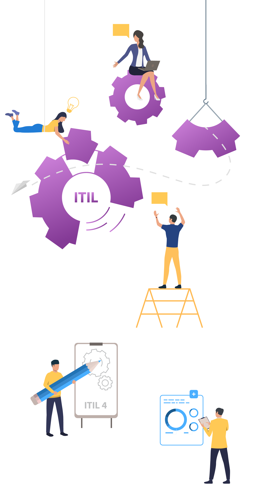
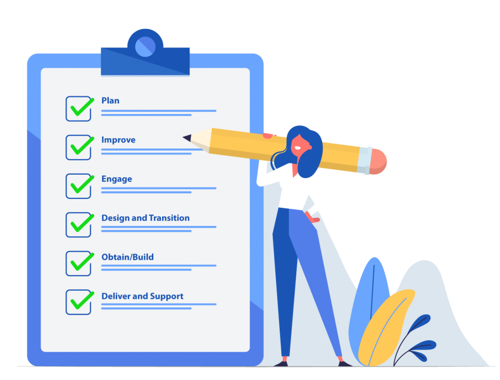
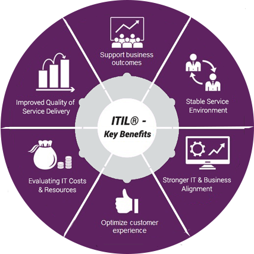

| Gestión de Servicios | |
|---|---|
|  | ¿Qué son?La gestión de servicios se define como un conjunto de competencias organizacionales especializadas para entregar el valor a los clientes en forma de servicios |
|  | ImportanciaEs importante porque ayuda a las organizaciones a entregar valor a los clientes, mejorar la eficiencia operativa, adaptarse al cambio y fomentar la mejora continua en la prestación de servicios. Proporciona un marco de trabajo estructurado y mejores prácticas que pueden ser aplicadas en diversas industrias y contextos empresariales para alcanzar estos objetivos. |
|  | BeneficiosSe ofrece una serie de beneficios que pueden ayudar a las organizaciones a mejorar su capacidad para entregar valor al cliente, mejorar la eficiencia operativa, adaptarse al cambio, gestionar proactivamente los riesgos y seguir mejorando continuamente su desempeño. |